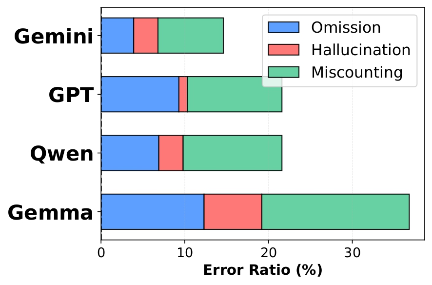
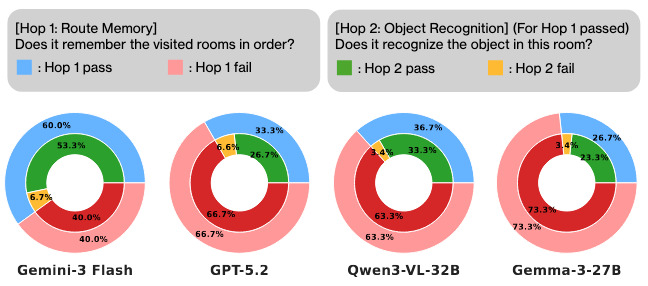
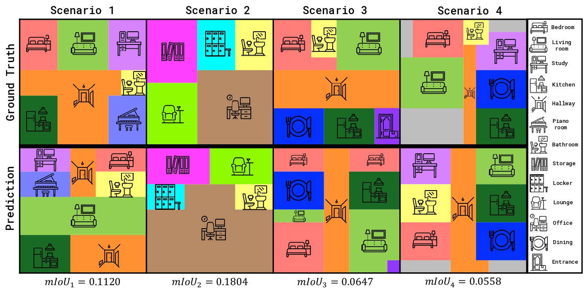

Video Abstractive and Extractive Reasoning Benchmark Leaderboard
Overview.VAEX-Bench is a benchmark for evaluating abstractive spatiotemporal reasoning in Large Multimodal Models (LMMs) using high-fidelity egocentric videos rendered from manually constructed 3D indoor environments. We design each episode as a controllable scenario in Trimble SketchUp and render photorealistic views with Chaos Enscape, enabling strict spatial consistency and unambiguous ground truth. VAEX-Bench decomposes beyond-the-visible reasoning into five tasks—Memory-Action, Map Direction, Map Scale, Simulation, and Global Counting—which jointly test long-horizon memory, allocentric map construction (direction and distance), viewpoint transformation, and global aggregation under partial observability. All QA pairs are human-authored and verified, and we provide task-specific error analyses to diagnose failure modes, revealing where current models break down when they must integrate dispersed cues across time and space rather than rely on frame-local evidence.
We visualize model performance across all 10 tasks from abstractive and extractive reasoning to make cross-model strengths and weaknesses easier to compare at a glance.
Average Performance by Model
Each model is compared using its abstractive and extractive averages side by side.
Abstractive Avg.Extractive Avg.
Task-Level Heatmap Across 10 Tasks
Rows correspond to models, and columns correspond to the five abstractive and five extractive tasks.
LowerHigher
Overview
Figure 1: Two examples of abstractive spatiotemporal queries from VAEX-BENCH: (Left) Global Counting, requiring aggregation of objects observed across the traversal; (Right) Map Direction, requiring inference of relative spatial directions between rooms.
Abstract
The growing interest in embodied agents increases the demand for spatiotemporal video understanding, yet existing benchmarks largely emphasize extractive reasoning, where answers can be explicitly presented within spatiotemporal events.
It remains unclear whether multimodal large language models can instead perform abstractive spatiotemporal reasoning, which requires integrating observations over time, combining dispersed cues, and inferring implicit spatial and contextual structure.
To address this gap, we formalize abstractive spatiotemporal reasoning from videos by introducing a structured evaluation taxonomy that systematically targets its core dimensions and construct a controllable, scenario-driven synthetic egocentric video dataset tailored to evaluate abstractive spatiotemporal reasoning capabilities, spanning object-, room-, and floor-plan–level scenarios.
Based on this framework, we present VAEX-BENCH, a benchmark comprising five abstractive reasoning tasks together with their extractive counterparts.
Our extensive experiments compare the performance of state-of-the-art MLLMs under extractive and abstractive settings, exposing their limitations on abstractive tasks and providing a fine-grained analysis of the underlying bottlenecks. The dataset will be released soon.
Key Points
We introduce VAEX-Bench, a scenario-driven synthetic dataset and taxonomy for abstractive spatiotemporal reasoning from videos.
VAEX-Bench includes five abstractive reasoning tasks with extractive counterparts to enable controlled comparisons.
Extensive experiments reveal limitations of current state-of-the-art MLLMs on abstractive tasks and analyze the underlying bottlenecks.
Evaluation
Abstractive Reasoning Evaluation
Model
Memory-Action
Map Direction
Map Scale
Simulation
Global Counting
Avg.
GPT-5.2 Closed
38.0
26.0
34.0
29.3
23.3
30.1
Gemini-3 Flash Closed
60.7
34.0
24.0
51.3
31.3
40.3
Gemini-3 Pro Closed
52.0
22.7
22.0
31.3
20.7
29.7
Claude 4.5 Haiku Closed
19.3
21.3
11.3
22.0
2.7
15.3
Claude 4.5 Sonnet Closed
30.0
19.3
19.3
40.7
11.3
24.1
Qwen3-VL-2B Open
26.0
18.7
19.3
26.0
6.7
19.3
Qwen3-VL-8B Open
34.0
22.0
15.3
34.0
17.3
24.5
Qwen3-VL-32B Open
40.0
26.0
23.3
42.7
17.3
29.9
Qwen3-VL-235B Open
43.3
16.7
13.3
46.7
13.3
26.7
InternVL3.5-2B Open
28.0
22.7
20.0
21.3
14.0
21.2
InternVL3.5-8B Open
36.7
24.0
21.3
26.0
16.0
24.8
Mistral-3.2-24B Open
28.7
16.7
10.0
18.7
14.0
17.6
Gemma-3-27B Open
32.0
24.0
23.3
28.7
10.7
23.7
GLM-4.6V-106B Open
35.3
18.0
20.7
37.3
6.0
23.5
Random
30.7
22.0
18.0
35.3
-
26.5
Human Performance
89.3
83.3
60.0
93.3
82.7
81.7
Extractive Reasoning Evaluation
Model
Appearance Order
Relative Direction
Relative Distance
Route plan
Object Counting
Avg.
GPT-5.2 Closed
73.3
26.0
56.0
18.7
48.7
44.5
Gemini-3 Flash Closed
93.3
40.0
62.7
16.0
38.0
50.0
Gemini-3 Pro Closed
96.0
44.7
66.7
26.0
44.7
55.6
Claude 4.5 Haiku Closed
34.0
30.0
26.7
30.0
40.0
32.1
Claude 4.5 Sonnet Closed
72.7
24.7
28.0
13.3
30.7
33.9
Qwen3-VL-2B Open
82.0
29.3
42.7
22.7
40.0
43.3
Qwen3-VL-8B Open
80.0
33.3
54.0
25.3
34.0
45.3
Qwen3-VL-32B Open
90.0
26.0
53.3
6.7
51.3
45.5
Qwen3-VL-235B Open
93.3
38.0
54.0
20.0
43.3
49.7
InternVL3.5-2B Open
64.0
30.7
36.7
20.0
30.7
36.4
InternVL3.5-8B Open
73.3
28.7
36.0
20.7
32.0
38.1
Mistral-3.2-24B Open
28.7
28.0
40.0
17.3
40.7
30.9
Gemma-3-27B Open
55.3
33.3
28.0
28.7
49.3
38.9
GLM-4.6V-106B Open
85.3
29.3
58.4
10.0
52.0
46.9
Random
15.3
22.0
42.0
20.0
-
24.8
Human Performance
93.3
88.0
77.3
88.7
92.7
88.0
Detailed Analysis
01
Perceptual Bottleneck
We analyze failures on
Global Counting
,
requiring models to detect and track object instances before aggregating them into global counts. To obtain a granular view of model failures, we decompose errors into three mutually exclusive categories:
01.
Omission ErrorAn error in which an object that is actually present in the scenario is incorrectly judged as absent and therefore not counted.
02.
Hallucination ErrorAn error in which an object that does not actually exist in the scenario is incorrectly judged to be present and is therefore included in the count.
03.
Miscounting ErrorAn error in which an object is correclty recognized as being present in the scenario, but the number assigned to that object is incorrect.

Figure 2. Error breakdown for the Global Counting task.
02
Temporal Bottleneck
We analyze failures on
Memory-Action
,
requiring models to recall the sequence of visited rooms along the trajectory and use that temporal memory to identify the correct action associated with a target location.
To disentangle different sources of failure, we perform a fine-grained error analysis along two hierarchical components:
Global Temporal Memory (Hop 1)
● Pass: Recalls the full trajectory.
● Fail: Forgets the sequence of rooms.
Local Temporal Memory (Hop 2)
● Pass: Matches action to target.
● Fail: Fails to link memory to action.

Figure 3. Temporal bottleneck in multi-hop sub-tasks.
03
Spatial Bottleneck
We analyze failures on
Map Direction
,
Map Scale
,
Simulation
,
requiring a coherent spatial representation of the environment.
Models must reason about relative room orientation, maintain consistent metric proportions, and simulate viewpoint transformations within a unified layout.
To diagnose these spatial bottlenecks, we evaluate the MLLMs to explicitly reconstruct a global cognitive map via grid-based floor-plan prediciton.

Figure 4. Visualization of an MLLM floor-plan prediction.
Conclusion
We present VAEX-BENCH, a scenario-driven benchmark for evaluating abstractive and extractive spatiotemporal reasoning in egocentric videos, moving beyond evidence-present extraction toward long-horizon memory, allocentric map reasoning, and global evidence aggregation.
Unlike prior benchmarks built on fixed captured footage, VAEX-BENCH is manually constructed with controlled scenario design and spatially consistent QA pairs, enabling precise diagnosis of failure modes.
Our experiments reveal persistent bottlenecks in global spatial memory and structured evidence integration across state-of-the-art MLLMs.
Future work will focus on automating the pipeline to scale benchmark generation while preserving its controllability.
BibTeX
@article{bang2026reasoning,
title={Reasoning over Video: Evaluating How MLLMs Extract, Integrate, and Reconstruct Spatiotemporal Evidence},
author={Bang, Seunghwan and Song, Hwanjun},
journal={arXiv preprint arXiv:2603.13091},
year={2026}
}